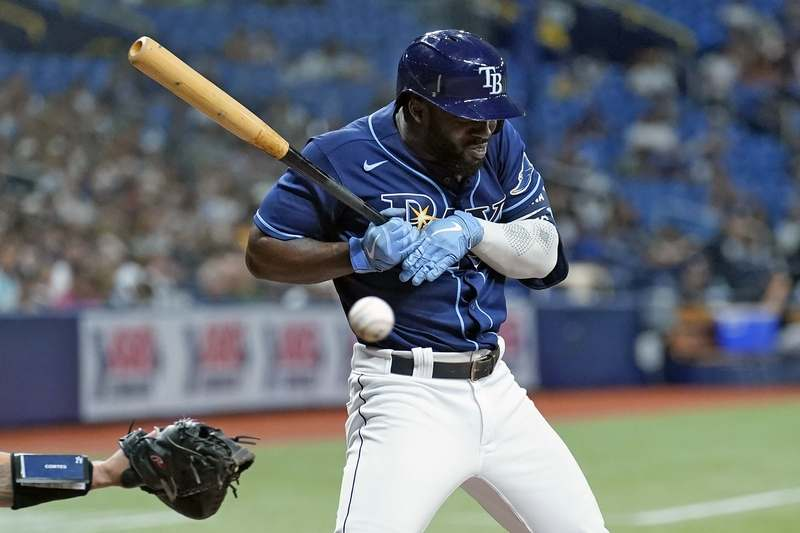
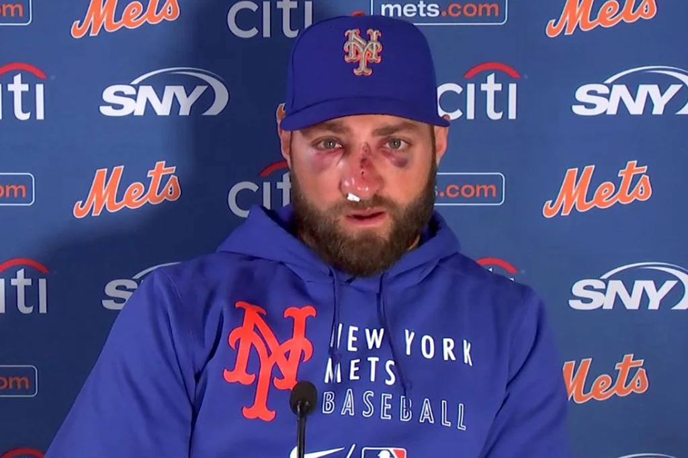
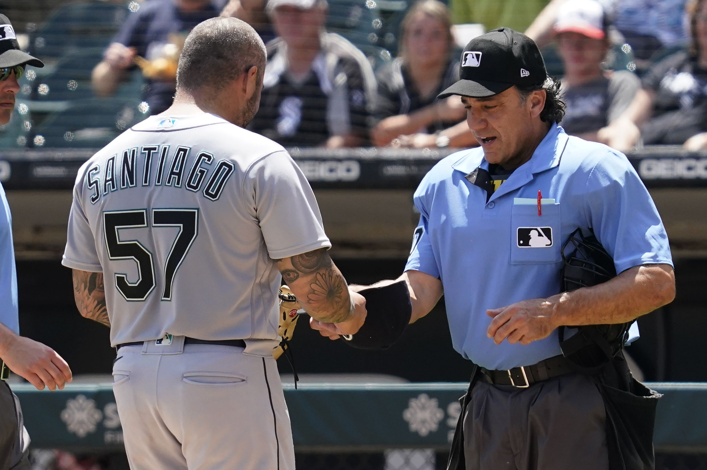

The MLB and the MiLB Has a Hit-by-Pitch Problem
The MLB and MiLB have seen a huge increase in hit-by-pitches and subsequent injuries. With pitchers throwing incredbily fast and with unprecedented velocity, they have started to lose control of the ball. This obvious lack of control has allowed for multiple batters to get hit by the ball and get severely injured because of it. Pitchers realized that to gain control of the ball while having the ability to throw high velocity pitches, they need assistance anf they need substances that allowed for the ball to become sticky. The epidemic of sticky substances reached an all-time high during the 2021 season. It got so bad that Rob Manfred, the MLB Commissioner, and the MLB made a rule that if a pitcher got caught with anything but the legal rosin bag on the ball or their self or equipment, they would be ejected from the game and they would be suspended for 10 days. Pitchers were also subject to the umpires checking their bodies and their equipment after every appearance they pitched to see if they were using a sticky substance. Manfred had this to say about the realization of the problem of sticky subtance abuse in the MLB and the steps they took to make sure they did something about the issue. “We started communicating with the clubs on this process right after we became aware of the situation in Anaheim,” Manfred said. “We communicated about our concern on the issue. We came back prior to the start of the ’21 season, communicated again about it and I think that when we saw what we perceived to be an escalation in the behavior, not a de-escalation, we came to the conclusion that we had to do something now. That’s a judgment call.” A sticky substance could be pine tar, a mixture of rosin and sunscreen, Spider Tack, and any substance that allows for the pitcher to get a better grip on the ball. This ban allowed for the batters to be much more vulnerable to hit-by-pitches and serious injuires in the batters box. The pitchers lost the substance that allowed for them to gain a good grip on the ball, but they are still going to be throwing at a high velocity, putting the batters in danger. This webpage will allow for the reader to realize how bad the hit-by-pitch epidemic is in the MLB and in the MiLB and some solutions to help reduce the amount of batters who get hit-by-pitches and help reduce the subsequent injuries.
Statistics
These statistics clearly show that the hit-by-pitch problem and the seriousness of these hit-by-pitches need attention from the MLB. The first graphic shows a small decline in days missed due to hit-by-pitches from 2011-2015, but eight of baseball's 10 top hit-by-pitch percent seasons have come in the last 18 years, according to FanGraphs Baseball. In 2019, there were 1,984 total hit-by-pitch at-bats in the MLB, which is a huge increase from 1997 which saw 1,449 total hit-by-pitch at-bats and 1,746 hit-by-pitch at-bats in 2002, according to Audacy KMOX St Louis.
The second graphic tells the readers where on the body that the batters are getting hit in the most frequently. The amount of batters that get hit in the head/face is concerning. Getting hit in the head/face from an extremely high veolocity fastball can severely injure a player, forcing them to experience intense pain and trauma. These batters sometimes never play like they used to before the incident and it could hinder their ability to play the game. The hand/finger/thumb region being the most hit part of the body is not too surprising, but it is still concerning nonetheless. Typically the hand/finger/thumbs are close to the face when the batter is setting up so this means that some of these hit-by-pitches are extremely close to hitting the batter's face. These stats clearly state that their needs to be a change in the game to help the batters obtain safety and protection.
The third graphic tells the reader in which state batters are hit-by-pitches the most. To find this, the amount of batters that were hit-by-pitch per team was found and then added depending on where the team is located. The average of hit-by-pitch batters are shown within the map. This graphic does not tell the reader about the increase of hit-by-pitches in the MLB and MiLB, but it does allow for the reader to realize that sometimes the weather, humidity, and talent of the team are factors when it comes to hit-by-pitches.
These statistics clearly state that there is a hit-by-pitch problem in the MLB and MiLB and there needs to be changes to reduce these constantly growing numbers. Here are ways that the MLB could limit and reduce the amount of batters hit-by-pitch and reduce the subsequent injuries.
Solutions to this Problem
Allow for the pitchers to use sticky substances, except for pine tar. These subtances allow for the pitchers to get a better grip on the ball. This would allow for them to have more control and it would reduce the amount of batters that get hit-by-pitch. Pine tar on the other hand, is a sticky substance that does not allow for the pitcher to gain a better grip on the ball. It allows for them to gain more rotation on the ball and this makes their pitchers reach a higher velocity without them having much control. Pine tar is extremely dangerous for the pitchers, so that should still be illegal, but other sticky substances should be allowed.
The MLB and MiLB should enforce harsher and stricter punishments are pitchers who intentionally hit batters. This would deter pitchers from purposefully hitting a batter and it would keep batters more safe.
Other solutions could be that pitchers who have a high amount of hit-by-pitches should be suspended. Another solution could be to penalize pitchers based on where they hit the batter. A pitcher who hits a batter in the leg, rib area or hand could be penalized less severely than a pitcher who hits a batter in the head/face area.
Conclusion
After reviewing the statistics of the increase of hit-by-pitches in the MLB and MiLB, there clearly needs to be a change in the rules in these organizations. There are feasible solutions to this problem and they need to be implemented before more batters get seriously hurt and before batters face career-ending injuries.